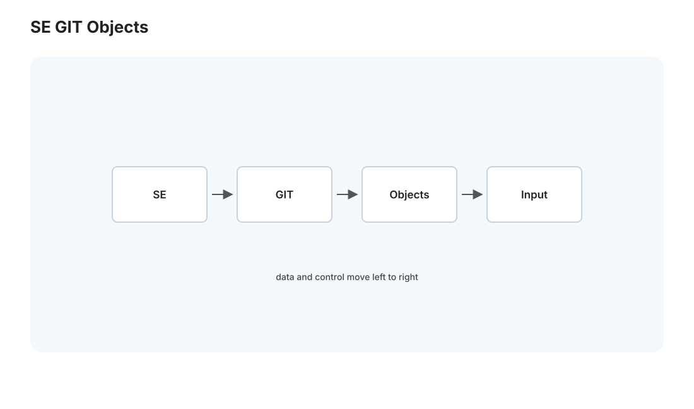
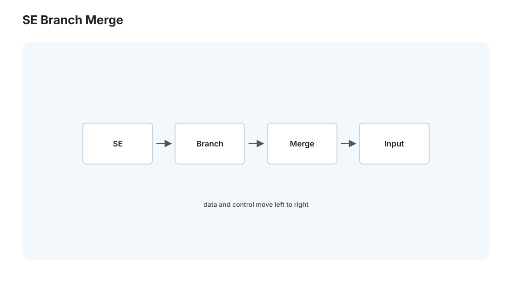
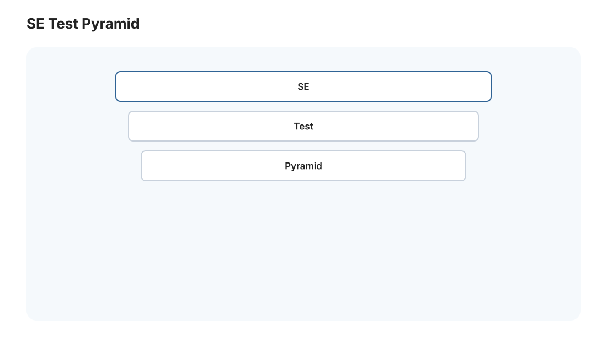

软工 I · Git 内部原理与测试
对标：Pro Git（Chacon）/ MIT Missing Semester / Berkeley CS169 ｜ 前置：crypto-01（哈希）、os-03（内容寻址的伏笔） 软件工程线讲"把代码写好、协作好、可靠交付"的工程实践。这一页两块：Git 的内部原理（你天天用它，但它底下是一个优雅的内容寻址数据结构，看懂它 git 就再也不会"背命令"）和测试（软件可靠性的支柱——测试的层级、什么值得测、TDD 的思想）。
1. Git 的心脏:内容寻址的对象数据库


大多数人把 git 当"背命令的黑魔法"，其实它的核心是一个极简优雅的数据结构——理解它，所有命令都变得可推理。Git 本质是一个内容寻址的键值存储：
- 一切皆对象，键 = 内容的哈希（SHA-1，🔗 crypto-01 哈希）。四种对象：
- blob：文件内容（不含文件名）。
- tree：目录（文件名 → blob/子 tree 的映射）——像 os-03 的目录！
- commit：一次提交（指向一个 tree + 父 commit + 作者 + 信息）。
- tag：标签。
- 内容寻址的含义：对象的名字就是它内容的哈希——内容相同则哈希相同则是同一个对象（自动去重）；内容改一个字节哈希全变（🔗 crypto-01 抗碰撞、os-03 内容寻址的伏笔）。这保证了完整性：commit 哈希覆盖了整个历史（每个 commit 含父 commit 哈希 → 改任何历史都会让后续所有哈希变 → 篡改可检测，这也是区块链的思想 crypto-02）。
commit 是一个 DAG（有向无环图，🔗 algo 线）：每个 commit 指向父 commit，分支合并产生多父——git 历史就是一张 commit 的 DAG，分支只是指向某个 commit 的可移动指针。
这一下讲清了所有命令：
- branch = 一个指向 commit 的指针（创建分支几乎零成本——只写一个 41 字节的文件）。
- HEAD = "我在哪"的指针。
- commit = 造一个新对象、把当前分支指针移过去。
- merge = 造一个有两个父的 commit。
- rebase = 把一串 commit 重新在另一个基点上"重放"（造新 commit、换父）。
- git 很少真的删东西——对象留在数据库里（所以误删能找回，reflog 是你的后悔药）。
读法：Git 不是"文件的快照序列"的模糊概念，是"内容寻址对象组成的 DAG + 可移动的分支指针"——记住这个模型，你就从"背命令"升级到"推理 git 在干什么"。这是本页最高价值的认知。
2. 分支模型与协作
- 分布式：每个克隆是完整仓库（全部历史）——离线可提交、无中心单点（🔗 dist 线，git 是分布式系统的日常实例）。
push/pull/fetch是仓库间同步对象。 - 协作流：feature 分支 → PR（Pull Request）→ review → 合并。小步提交、清晰的提交信息、一个 PR 一件事——这些不是繁文缛节，是让协作和排查历史（
git bisect二分查 bug 引入点，🔗 algo 二分）可行的工程纪律。 - 合并冲突：两个分支改了同一处——git 无法自动决定，要人解决。理解"三方合并"（共同祖先 + 两个分支版本）就知道冲突为什么发生、怎么解。
你的实践（memory 里的教训）：Medusa 有"生产 ahead origin/main""dev 声明完成后 arch 必 git verify""单 commit 用 git show"这些纪律——它们全建立在'git 历史是可信、可追溯的 DAG'这个本页原理上。
3. 测试:软件可靠性的支柱

代码会变、人会犯错——测试是"改动后仍正确"的自动化保证。测试金字塔（从多到少、从快到慢）：
| 层 | 测什么 | 特点 |
|---|---|---|
| 单元测试 | 单个函数/模块 | 快、多、精确定位——主体 |
| 集成测试 | 模块间协作（如后端 + 数据库） | 中等、测接缝 |
| 端到端（E2E） | 整个系统（浏览器点到底） | 慢、少、脆、最接近真实 |
金字塔原则：底层多、顶层少——单元测试快而稳，E2E 慢而脆（别倒过来堆一堆 E2E）。
什么值得测： - 核心逻辑、边界条件、易错处、修过的 bug（回归测试——bug 修了写个测试防它复活）。 - 别为了覆盖率测试 getter/setter 这种琐碎——覆盖率是参考不是目标（100% 覆盖 ≠ 没 bug）。 - 测行为不测实现：测"函数做对了什么"，别测"它内部怎么做的"（否则重构就假失败）。
4. TDD 与测试的哲学
测试驱动开发（TDD）：先写测试（红）→ 写最少代码让它过（绿）→ 重构（重构时测试保驾）。价值不只在测试本身——先写测试逼你先想清楚"这个函数的契约是什么"（输入输出、边界），是一种设计工具。不必教条式全程 TDD，但"写代码前先想怎么验证它对"是好习惯。
可测试性 = 好设计的副产品：难测的代码往往是设计差的信号（耦合太紧、副作用太多、依赖太硬）。纯函数最好测（pl-02，同输入同输出）——这是"优先纯函数"又一个理由。依赖注入、mock 外部服务（数据库、LLM API）让单元测试快而独立。
对你（Medusa）：memory 提到"dev UI 任务必须实机验收""pytest 46 全过"——测试是你和 GPT/OPS 协作的验收契约。预测层的 predict.py、迷你数据库等，都该有测试当"改动不破坏"的护栏。
5. 练习与要点
例 1（看 git 的心脏） 在一个仓库里 git cat-file -p HEAD 看 commit 对象、git cat-file -p <tree哈希> 看 tree——亲眼看到"commit 指向 tree、tree 指向 blob"，git 的对象模型不再抽象。
例 2（分支只是指针） 创建分支、看 .git/refs/heads/ 下那个只含一行哈希的文件——理解"创建分支为什么瞬间完成"（只写 41 字节）。
例 3（写回归测试） 给一个修过的 bug 写一个测试（能复现旧 bug 的输入 → 断言现在正确）——体会"回归测试防 bug 复活"，把 memory 里"bug 修了要防回归"的教训工程化。\(\blacksquare\)
下一页：软工 II——CI/CD 与代码质量：自动化的构建-测试-部署流水线，以及代码审查、静态分析、技术债这些让团队可持续的实践。